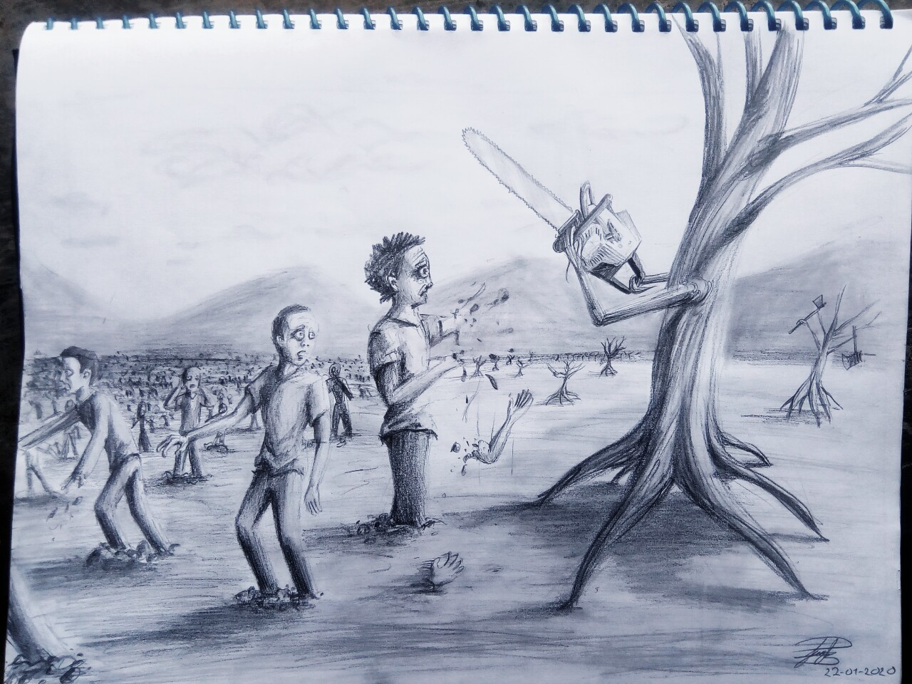
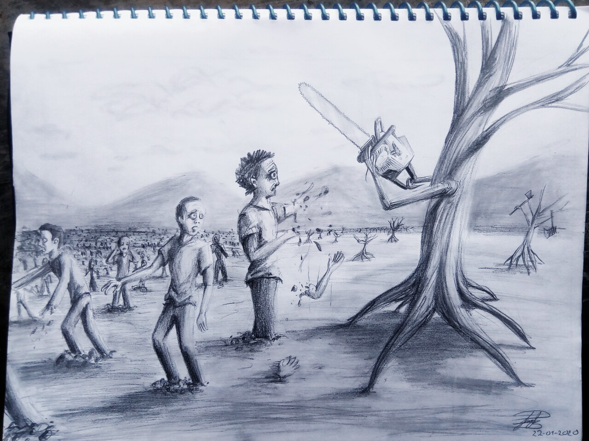

¿Qué es el arte en realidad?
arte ha trascendido a lo largo de toda la historia, siempre buscando interpretar el sentir, el ver y el inmortalizar el alma de cada uno de los artistas en sus obras.
Puedes revisar mi galeria de arte.
Estas son algunas de mis obras.

 
